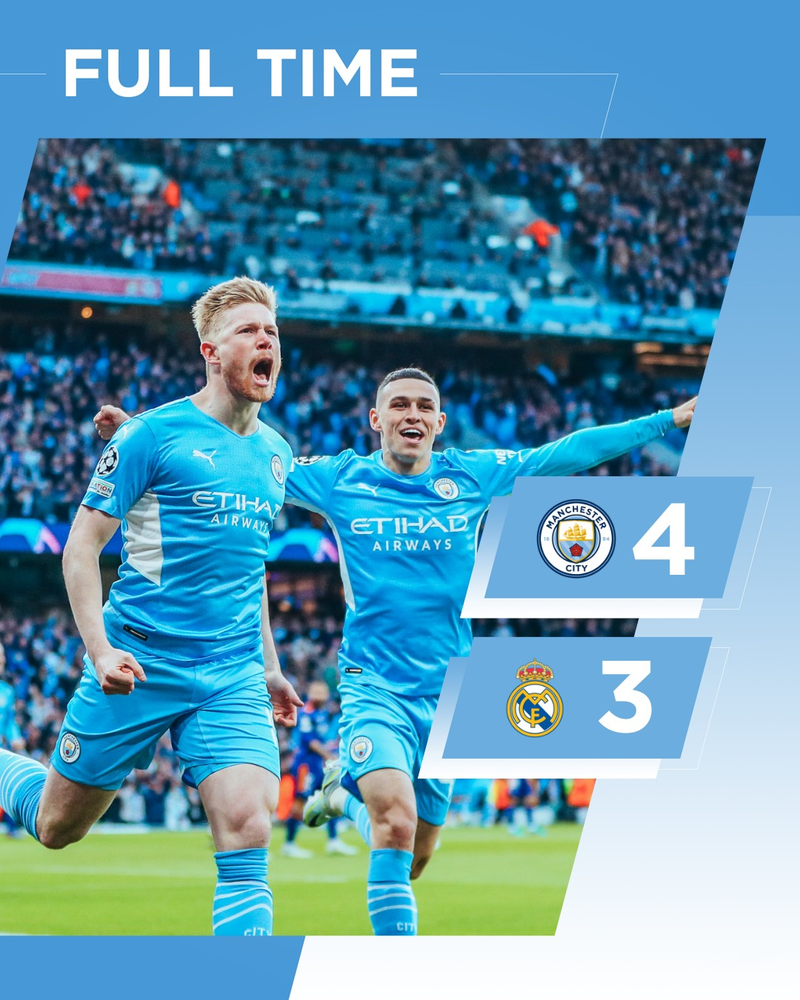

Admin
Abril 28, 2022
2 horas
Um hino ao futebol no City 4-3 Real: Merengues têm sete vidas e cityzens não sabem 'matar'
Jogo frenético no Ethiad, com sete golos entre o Manchester City e o Real Madrid, num verdadeiro hino ao futebol. Os merengues voltaram a salvar-se de uma derrota com números maiores, aproveitando os erros defensivos dos cityzens, tal como fizeram diante do PSG e Chelsea. Bernardo marcou e o City vai para a segunda-mão com um golo de vantagem (4-3), num jogo onde podia ter goleado. O Real resiste.